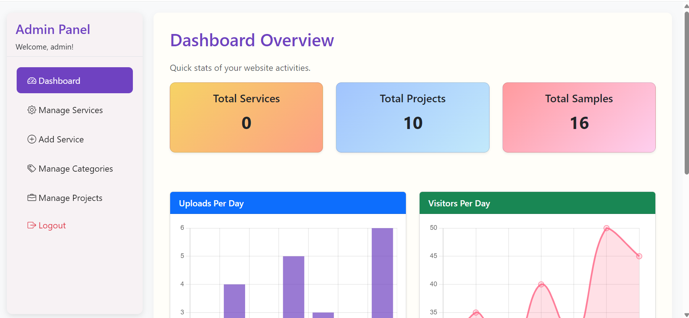

My Projects
Here are some of the projects worked on that are Live,
Digital E-Commerce Website
A full-stack online shopping platform designed to provide a seamless and secure digital commerce experience. The system features user authentication and account management, a dynamic product catalog with search and filtering capabilities, shopping cart functionality, and secure payment integration. Technologies used HTML, CSS, Bootstrap, JavaScript(For Frontend) and PHP, MySQL(For Backend)

Bursary Application App
A cross-platform mobile application developed for iOS and Android to streamline bursary application submission and tracking. The system securely handles student data, enabling users to create profiles, submit bursary applications, upload supporting documents, and monitor application status in real time. Key features include secure authentication, cloud-based data storage, document upload and management, application status notifications, and an administrative dashboard for reviewing and managing submissions. The platform is designed to enhance transparency, efficiency, and accessibility in the bursary allocation process. Technologies used Flutter, Firebase(for storing data), Android Studio(tool)
CaptiveWifi Billing System
A web-based network authentication system designed to control and manage user access to Wi-Fi networks. The captive portal redirects users to a login interface before granting internet access, enabling secure user authentication and session management. Key features include user registration and login, access control, session tracking, and an administrative interface for monitoring connected users and managing access permissions. The system improves network security while providing administrators with better visibility and control over Wi-Fi usage. Technologies used HTML, CSS, JavaScript, Bootstrap(Frontend) , PHP, MySQL(Backend)

Cross and Crown CBO Website
An informational website for Cross and Crown Kenya, a Community-Based Organization (CBO), providing an online platform to showcase its mission, programs, community initiatives, and events. The website features a responsive and user-friendly interface that allows visitors to easily access information about the organization’s activities, projects, and opportunities for engagement or support. The platform enhances the organization’s visibility, communication, and outreach within the community, as well as to potential partners and supporters. Technologies used HTML, CSS, JavaScript


NextLevel Printers Website
A web platform for promoting printing and graphic design services offered by NextLevel254. The website enables potential clients to explore available services, view portfolio samples, and submit service inquiries online.Key features include a responsive user interface, service listings, portfolio display, and a backend system for managing client inquiries and service requests. The platform strengthens the business’s digital presence while improving communication and accessibility for customers seeking printing and design services. TTechnologies used HTML, CSS, JavaScript(Frontend) PHP, MySQL(Backend)